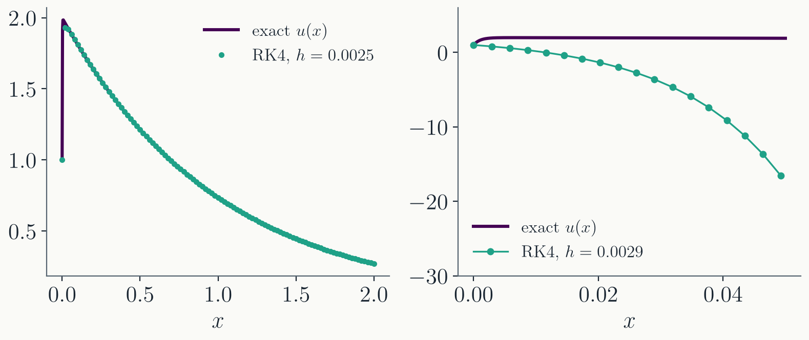
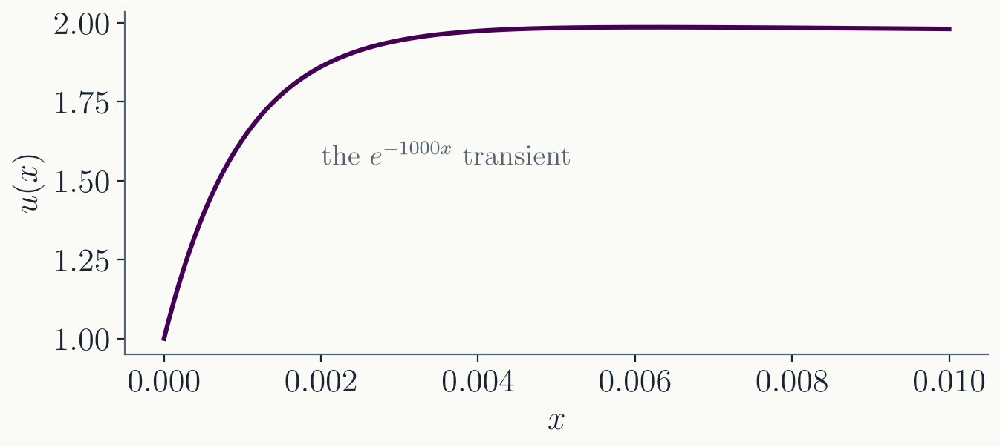
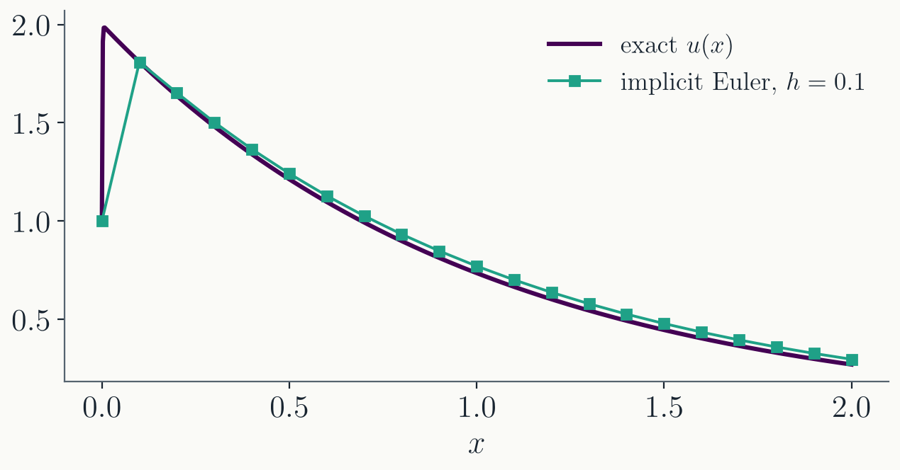

PHYS 4027 / 5027 · Fall 2026 · Lecture 7
Runge-Kutta and Stiff Equations
Prof. Alex Chen
Department of Physics
Washington University in St. Louis
Today
The Runge-Kutta family. The general form
and the Butcher tableau.Where the coefficients come
from. Matching Taylor series, worked out for two
stages.Stiff equations and
stability. When the step size is dictated by
stability, not accuracy.Implicit methods. Buying
stability with a root solve per step.
Mirrors the 2025 Lecture 7. Adaptive step size control is
deliberately NOT here: next week.
Part I · The Runge-Kutta family
One pattern behind Euler, midpoint, RK4
Last time
Euler: $\;y_{n+1} = y_n + h\, k_1$, with
$k_1 = f(t_n, y_n)$. First order.
Midpoint: $\;y_{n+1} = y_n + h\, k_2$,
with $k_2 = f\big(t_n + \tfrac{h}{2},\,
y_n + \tfrac{h}{2} k_1\big)$. Second order.
RK4: four slopes $k_1, \dots, k_4$,
combined with weights
$\tfrac16, \tfrac13, \tfrac13, \tfrac16$. Fourth order.
All three follow one pattern: evaluate
$f$ at a few staged points, then take one step with a weighted
average of the slopes.
The general Runge-Kutta method
An $s$-stage Runge-Kutta method
computes $s$ slopes, each built from the previous ones, and
steps with a weighted sum:
$$k_i = f\Big(t_n + c_i h,\;\, y_n + h \sum_{j=1}^{i-1} a_{ij}\, k_j\Big),
\qquad y_{n+1} = y_n + h \sum_{i=1}^{s} b_i\, k_i$$
The method is completely specified by the
numbers $a_{ij}$, $b_i$, $c_i$.
$j < i$ makes the method
explicit : each slope uses only slopes already
computed.
The Butcher tableau
The coefficients are listed in a
standard table:
$$\begin{array}{c|cccc}
c_1 & & & & \\
c_2 & a_{21} & & & \\
c_3 & a_{31} & a_{32} & & \\
\vdots & \vdots & \vdots & \ddots & \\
c_s & a_{s1} & a_{s2} & \cdots & a_{s,s-1} \\
\hline
& b_1 & b_2 & \cdots & b_s
\end{array}
\qquad\qquad
\begin{array}{c|cc}
0 & & \\
1/2 & 1/2 & \\
\hline
& 0 & 1
\end{array}$$
On the right: the midpoint method as a
tableau. Rows are the stages; the bottom row is the final
weighted average.
Where do the coefficients come from?
The exact solution obeys the Taylor
expansion
$$y_{n+1} = y(t_n + h) = y_n + h\, y' + \frac{h^2}{2} y'' +
\frac{h^3}{6} y^{(3)} + \cdots$$
and the chain rule
on $y' = f(t, y)$ turns each derivative of $y'$ into total
derivatives of $f$:
$$\begin{align}
y'' &= \frac{df}{dt} = f_t + f_y\, y' = f_t + f_y\,f \\
y^{(3)} &= f_{tt} + 2 f\, f_{ty} + f^2 f_{yy}
+ f_y\,(f_t + f_y\, f)
\end{align}$$
Choose the coefficients so the method
reproduces this expansion to the desired order. The expressions
grow quickly; order 4 already involves a page of terms.
BOARD: y'' = d/dt f(t, y(t)) = f_t + f_y y' = f_t + f_y f, one
line. y''' follows by differentiating again and substituting;
do not attempt at the board beyond quoting the shape. The
bookkeeping for high orders is done with rooted trees
(Butcher); mention the name, do not go there.
Two stages, worked out
Take a general explicit two-stage
method ($c_1 = 0$) and expand its slopes to first order in
$h$:
$$\begin{align}
k_1 &= f(t_n, y_n) = f \\
k_2 &= f\big(t_n + c_2 h,\; y_n + h\, a_{21} k_1\big)
\approx f + c_2 h\, f_t + a_{21} h\, f f_y
\end{align}$$
The step then
reads
$$y_{n+1} = y_n + h\,(b_1 + b_2)\, f
+ h^2 \big(b_2 c_2\, f_t + b_2 a_{21}\, f f_y\big)$$
Matching the expansion
The Taylor expansion demands
$y_{n+1} = y_n + h f + \tfrac{h^2}{2}(f_t + f_y f) + O(h^3)$.
Comparing term by term:
$$b_1 + b_2 = 1, \qquad b_2 c_2 = \tfrac12,
\qquad b_2 a_{21} = \tfrac12$$
Three equations, four unknowns: a whole
one-parameter family of second-order methods.
The choice $b_2 = 1$ gives $b_1 = 0$,
$c_2 = a_{21} = \tfrac12$: the midpoint method.
Other choices give other named methods;
all of them are second order.
These are called order
conditions . An order does not pin down a unique method.
If asked for another member: b_2 = 1/2 gives b_1 = 1/2,
c_2 = a_21 = 1, which is Heun's method (trapezoid predictor-
corrector). The count for higher orders: order 3 needs 4
conditions, order 4 needs 8 conditions on 10 parameters of a
4-stage method, which is why RK4 exists.
RK4 as a tableau
$$\begin{array}{c|cccc}
0 & & & & \\
1/2 & 1/2 & & & \\
1/2 & 0 & 1/2 & & \\
1 & 0 & 0 & 1 & \\
\hline
& 1/6 & 1/3 & 1/3 & 1/6
\end{array}$$
Four stages meet the eight order-4
conditions.
Beyond order 4, the number of required
stages exceeds the order: order 5 needs six stages. This
makes RK4 a sweet spot of accuracy per evaluation.
A fifth-order method: Dormand-Prince
$$\begin{array}{c|ccccccc}
0 & & & & & & & \\
1/5 & 1/5 & & & & & & \\
3/10 & 3/40 & 9/40 & & & & & \\
4/5 & 44/45 & -56/15 & 32/9 & & & & \\
8/9 & 19372/6561 & -25360/2187 & 64448/6561 & -212/729 & & & \\
1 & 9017/3168 & -355/33 & 46732/5247 & 49/176 & -5103/18656 & & \\
1 & 35/384 & 0 & 500/1113 & 125/192 & -2187/6784 & 11/84 & \\
\hline
& 35/384 & 0 & 500/1113 & 125/192 & -2187/6784 & 11/84 & 0
\end{array}$$
Seven stages; how many evaluations of $f$
per step?
This tableau returns next lecture: it
carries a built-in error estimate that drives adaptive step
size control.
Evaluations: seven stages, but the last stage row equals the b
row, so k_7 of this step is k_1 of the next (FSAL, "first same
as last"): six new evaluations per accepted step. Nobody
derives these coefficients by hand; they are looked up.
Part II · Stiff equations
When a dead timescale rules the step
A harmless-looking system
$$\frac{du}{dx} = 998\, u + 1998\, v, \qquad
\frac{dv}{dx} = -999\, u - 1999\, v$$
with $u(0) = 1$, $v(0) = 0$.
Linear, two variables, smooth
coefficients. RK4 should have no trouble.
RK4 on the system

At $h = 0.0025$: the error at $x = 2$ is
$2\times10^{-13}$.
At $h = 0.0029$: the solution reaches
$10^{51}$ by $x = 2$. Note the right panel covers only
$x < 0.05$.
What the solution actually does
$$u(x) = 2 e^{-x} - e^{-1000x}, \qquad
v(x) = -e^{-x} + e^{-1000x}$$

The $e^{-1000x}$ piece is gone after
$x \approx 0.005$, yet its timescale limits the step size
for the entire integration.
A problem with widely separated
timescales is called stiff .
Stiffness is common
A standard example from chemical
kinetics, with reaction rates spanning nine orders of
magnitude:
$$\begin{align}
\frac{dA}{dt} &= -0.04\, A + 10^4\, B C \\
\frac{dB}{dt} &= 0.04\, A - 3\times10^7 B^2 - 10^4\, B C \\
\frac{dC}{dt} &= 3\times10^7 B^2
\end{align}$$
Any system mixing fast and slow physics
does this: chemistry, radiative cooling in a fluid, circuits
with small capacitances.
Part III · Stability
Why the step limit is a cliff
The test equation
Analyze the simplest decaying
problem:
$$\frac{dy}{dx} = -\lambda y, \qquad \lambda > 0$$
Euler's method
multiplies by the same factor every step:
$$y_{n+1} = (1 - h\lambda)\, y_n
\quad\Longrightarrow\quad
y_n = (1 - h\lambda)^n\, y_0$$
$|1 - h\lambda| < 1$: the numerical
solution decays, as it should. This requires
$h < 2/\lambda$.
$|1 - h\lambda| > 1$: the numerical
solution grows without bound while the true solution decays
to zero.
Stability for a system
For a linear system
$d\mathbf{y}/dx = -\mathbf{A}\,\mathbf{y}$, expand
$\mathbf{y}_0$ in eigenvectors of $\mathbf{A}$ with eigenvalues
$\lambda_i$. Euler acts on each mode separately:
$$\mathbf{y}_n = \sum_i c_i\, (1 - h\lambda_i)^n\,
\boldsymbol{\xi}_i$$
Every mode must be stable, so the
fastest one sets the step:
$h < 2/\lambda_{\max}$.
A system is stiff when
$\lambda_{\max}/\lambda_{\min} \gg 1$: the fast mode limits
$h$, the slow mode sets how long you must integrate.
Back to the example
Our system is
$d\mathbf{y}/dx = -\mathbf{A}\mathbf{y}$ with
$$\mathbf{A} = -\begin{pmatrix} 998 & 1998 \\ -999 & -1999
\end{pmatrix}, \qquad \text{eigenvalues } 1 \text{ and } 1000$$
Stiffness ratio 1000. The $\lambda = 1000$
mode is the $e^{-1000x}$ transient.
The same analysis for RK4 gives
$h < 2.79/\lambda_{\max} = 0.00279$: exactly between the two
panels of the earlier figure.
Stability is a cliff, not a slope: at
$h = 0.0025$ the answer is thirteen digits good, at
$h = 0.0029$ it is $10^{51}$.
DERIVATION of the RK4 bound if pressed: on the test equation
every RK stage is a polynomial in z = -h lambda, and one RK4
step multiplies y by R(z) = 1 + z + z^2/2 + z^3/6 + z^4/24
(the Taylor polynomial of e^z, which is what "reproduces the
expansion to 4th order" means on this equation). Stability
needs |R(z)| <= 1; on the real axis that interval ends at
z = -2.785, giving h < 2.785/lambda_max. Same structure as
Euler, whose R(z) = 1 + z.
Part IV · Implicit methods
Stability without tiny steps
Implicit Euler
Evaluate the slope at the
end of the step instead of the beginning:
$$y_{n+1} = y_n + h\, f(t_{n+1},\, y_{n+1})$$
On the test
equation:
$$y_{n+1} = y_n - h\lambda\, y_{n+1}
\quad\Longrightarrow\quad
y_{n+1} = \frac{y_n}{1 + h\lambda}$$
$|1 + h\lambda| > 1$ for every $h > 0$:
the numerical solution decays no matter how large the step.
Unconditionally stable.
The price of implicitness
$y_{n+1}$ appears on both sides. Each step means solving
$$y_{n+1} = y_n + h\, f(t_{n+1}, y_{n+1})$$
for $y_{n+1}$.
For a nonlinear $f$, that is a
root-finding problem: Newton's method, once per step.
For a linear system it is a matrix
solve: $(\mathbf{1} + h\mathbf{A})\,\mathbf{y}_{n+1} =
\mathbf{y}_n$.
Stability is bought with work per step.
For stiff problems the trade is overwhelmingly worth it.
Implicit Euler on the stiff system

$h = 0.1$ is 40 times beyond RK4's
stability limit; the error at $x = 2$ is $3\times10^{-2}$,
set by accuracy, not stability.
The transient is not resolved, just
damped. When only the slow behavior matters, that is exactly
what you want.
Semi-implicit Euler
To avoid a full nonlinear solve,
linearize $f$ around the current point:
$$
\begin{align}
y_{n+1} = y_n + h\left[f(y_n)
+ \left.\frac{df}{dy}\right|_{y_n} (y_{n+1} - y_n)\right] \\
\;\;\Longrightarrow\;\;
y_{n+1} = y_n + h\left(1 - h \frac{df}{dy}\right)^{-1} f(y_n)
\end{align}
$$
For systems, $df/dy$ is the Jacobian
matrix, and the inverse is a linear solve per step.
Usually much more stable than explicit
methods, but not guaranteed; full stability requires solving
the nonlinear equation to tolerance.
DERIVATION of the rearrangement: move the (df/dy) y_{n+1} term
to the left, (1 - h df/dy)(y_{n+1} - y_n) = h f(y_n), then
solve for the increment. Check against the linear test
equation: f = -lambda y gives y_{n+1} = y_n (1 - h lambda /
(1 + h lambda)) = y_n / (1 + h lambda), identical to implicit
Euler, as it must be since f is already linear.
Where this goes next
Next lecture: error
estimation and adaptive step size control, built on the
Dormand-Prince tableau.References:
Numerical Recipes, 3rd ed., Sections 17.1-17.2 and
17.5.
Burden & Faires, Numerical Analysis ,
Chapter 5.